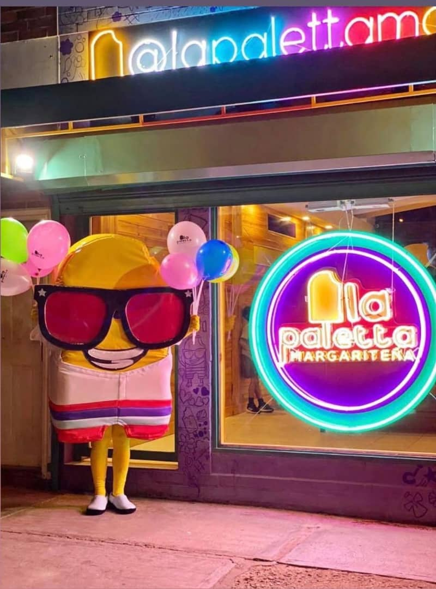

Plaza

La marca tiene presencia física en varias ciudades de Venezuela, como Margarita, Caracas, La Guaira y Lechería, lo que refleja una estrategia de expansión nacional. Sus locales están diseñados para ser puntos de encuentro y disfrute, promoviendo experiencias alrededor del consumo de sus productos.